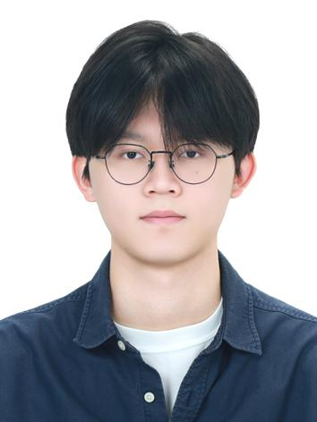
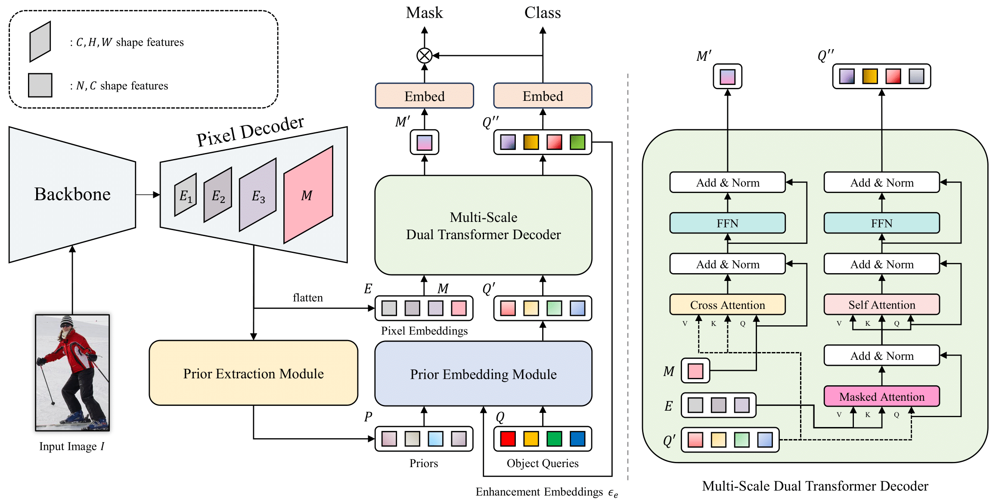
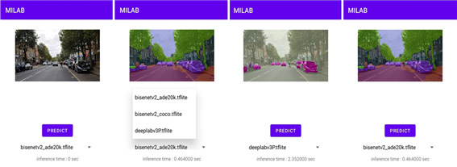
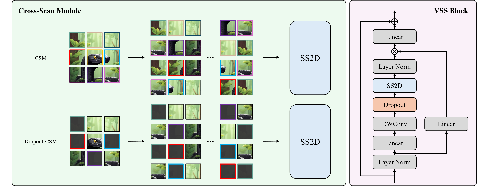
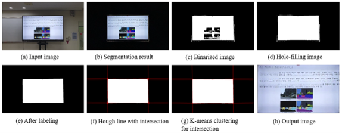

|
Junyoung Hong
Junyoung Hong is a undergraduate intern in the Machine Intelligence Lab. at Yong In University, Gyeonggi-do, Korea.
His research mainly focuses on various 2D/3D computer vision including novel view synthesis, image segmentation.
He is always open to collaborations or suggestions. Please feel free to contact him if you have any questions or suggestions.
Email /
CV /
Github
|

|
|  |
D2FP: Learning Implicit Prior for Human Parsing
Junyoung Hong, Hyeri Yang, Ye ju Kim, Haerim Kim, Shinwoong Kim, Euna Shim, Kyungjae Lee
IEEE/CVF Winter Conference on Applications of Computer Vision (WACV), 2025
Paper (temporal) / arXiv / Code
We propose a novel Transformer for human parsing, which learns structural priors instead of relying on classical handcrafted data structures to adapt object queries before Transformer decoding process.
|
|  |
Generalized On-Device AI Framework for Semantic Segmentation
Junyoung Hong, Kyungjae Lee
Jounal of the Korea Institute of Electronic Communication Sciences (KIECS), 2024
We propose generalized On-Device AI framework for semantic segmentation in Android.
|
|  |
Patch Regularization in Visual State Space Model
Junyoung Hong, Hyeri Yang, Ye Ju Kim, Shinwoong Kim, Kyungjae Lee
International Technical Conference on Circuits/Systems, Computers and Communications (ITC-CSCC), 2024
Paper
We propose a simple yet robust patch regularization strategy that drops several patches during training to construct distinct scanning permutations, while using all patches during testing.
|
|  |
A Screen of Slide Detection Method Using Deep Learning-Based Segmentation and Hough Transform
Junyoung Hong*, Sunguk Jung*, Yongwoo Lee, Hyeonbeom Heo, Hyeri Yang, Hayeon Kim, Kyungjae Lee (* equally contributed)
International Technical Conference on Circuits/Systems, Computers and Communications (ITC-CSCC), 2022
Paper
We propose a Hough Transform-based segmentation mask refinement algorithm in a virtual environment due to COVID-19.
|
|
{kind=link}